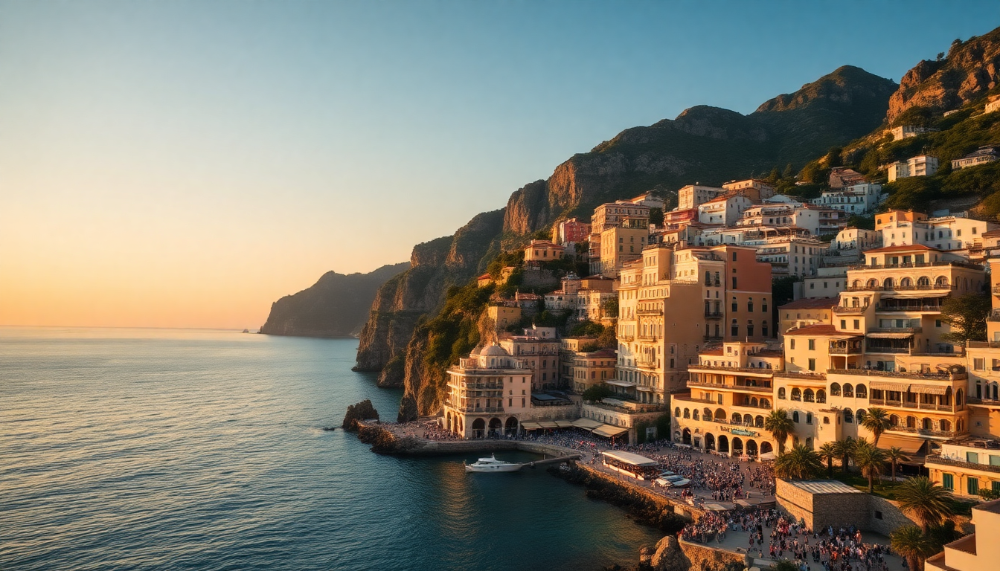

Best Time to Visit Italy's Amalfi Coast for Fewer Crowds

I’ve driven the SS163 Amalfi Drive three times now, and each trip taught me something new about timing. The first time I went in August, I spent more time stuck in a bus queue near Positano’s Spiaggia Grande than actually swimming. The second trip was in late September, and I finally understood why locals say that’s the real sweet spot. This guide breaks down exactly when to go, based on what matters most: crowds, weather, and your budget.
When is the best time for good weather without the crowds?
Late September to early October is the sweet spot. The sea is still warm enough for swimming—usually around 23°C (73°F)—and the summer crowds have thinned out. I walked into Ristorante Da Adolfo in Amalfi without a reservation in late September, something impossible in July. The daily high sits around 26°C, perfect for hiking the Path of the Gods without sweating through your shirt.
- September: Still busy the first two weeks, then drops off sharply. Hotel prices at Le Sirenuse in Positano drop by about 30%.
- October: Risk of rain increases (about 8 rainy days), but you’ll have Ravello’s Villa Cimbrone nearly to yourself.
- May: Second-best option. Everything is green, flowers bloom at Villa Rufolo, and the water is chilly but swimmable by late May.
Is the Amalfi Coast worth visiting in winter?
Yes, but only if you’re okay with closed restaurants and ferry schedules that shrink to a skeleton. I spent a week in Sorrento one January, and while the coastal views were dramatic with storm clouds over the Tyrrhenian Sea, half the places I wanted to eat were shuttered. The ferry from Sorrento to Amalfi runs only a few times a week, so you’re stuck driving the winding road or taking the SITA bus.
- Pros: Hotel rates at Hotel Palazzo Murat in Positano drop to €120 a night. No crowds at Duomo di Amalfi.
- Cons: Many beach clubs like La Marinella in Amalfi don’t open until April. Rain is frequent—expect 12–14 rainy days in December.
- Best winter activity: Visit the Limoncello factory in Sorrento (I like Il Limoneto) and take a day trip to Pompeii, which is less crowded in January.
What months should I avoid for peak crowds and prices?
July and August. I’ll be blunt: unless you have no other choice, skip these months. The Amalfi Coast gets over 5 million visitors a year, and a huge chunk comes in these two months. The Spiaggia di Fornillo in Positano is packed shoulder-to-shoulder by 10 a.m. The SITA bus from Amalfi to Positano becomes a sweaty, standing-room-only nightmare.
- August 15 (Ferragosto): Everything is packed. Avoid driving on the SS163 entirely—I once sat in a 2-hour traffic jam near the Grotta dello Smeraldo.
- July hotel prices: Expect to pay €400+ per night for a basic room at Hotel Miramare in Positano. Same room in May? About €200.
- Beach access: Umbrella rentals at Spiaggia di Castiglione near Ravello cost €30 per day in August. In June, it’s €15.
How does the season affect ferry and bus schedules?
Ferries are your best bet for getting between towns, but they’re seasonal. The main operator, Travelmar, runs frequent routes from April to October. In peak season (June–August), ferries from Sorrento to Positano run every 30 minutes. By November, that drops to a few weekly runs.
- April–October: Full ferry schedule. Amalfi to Positano takes 25 minutes, costs €8.
- November–March: Ferry service is limited or suspended. You’ll rely on SITA buses, which run less frequently and get crowded.
- Pro tip: In shoulder months, check the Travelmar website the day before—they sometimes cancel runs due to low demand or weather.
Is Ravello worth visiting outside of summer?
Ravello is actually better in spring or fall. It sits 350 meters above the coast, so it’s cooler than Amalfi or Positano in summer, but the real draw—the gardens at Villa Cimbrone and Villa Rufolo—are at their best in May and September. The Ravello Festival (music and arts) runs from April to October, but the most popular concerts happen in July and August when the crowds are thickest.
- May: Wisteria and roses bloom at Villa Rufolo. The views from the Terrace of Infinity at Villa Cimbrone are stunning without the selfie-stick hordes.
- October: The festival winds down, but the gardens are still lovely. I had lunch at Ristorante Cumpà Cosimo with a view of the coast all to myself.
- Winter: Ravello is quiet. Many shops close, but Hotel Caruso stays open and offers deep discounts.
What about shoulder season trade-offs?
Shoulder months (April, May, October) give you good weather and manageable crowds, but you trade off some conveniences. In April, the sea is too cold for swimming (about 16°C). In October, some beach clubs close after the first week. I found that mid-May and late September offer the best balance: warm enough to swim, busy but not overwhelming, and hotels still have availability.
- April: Easter week is a mini-peak. Prices spike, but the weather is hit-or-miss. I had sunny 20°C days and chilly rain in the same trip.
- October: Limoncello harvest season. You can watch locals pick lemons in the terraced gardens above Amalfi. Just bring a rain jacket.
- What you gain: Lower prices, shorter queues at the Duomo di Amalfi, and a more relaxed vibe at Bar Internazionale in Positano.
FAQ
Is the Amalfi Coast too crowded in June?
June is the start of peak season, but it’s manageable until the last week. The first two weeks of June have good weather (25–28°C) and the water is warm enough. By the third week, school holidays in Italy begin, and crowds spike. I’d aim for the first half if you can.
Can I visit the Amalfi Coast on a budget in shoulder season?
Yes. In May or October, you can find rooms at B&B Villa Maria in Sorrento for under €100 a night. Eat at Da Franco in Positano for decent seafood without the tourist markup. The SITA bus is cheap (€2 per ride), but factor in that ferries cost more in shoulder months due to reduced frequency.
What’s the worst month for rain on the Amalfi Coast?
November is the wettest, with about 14 rainy days. December and January are close behind. If you’re set on a dry trip, avoid these months. I got caught in a downpour on the Path of the Gods in November—the trail turned to slick mud, and the views were gone. Stick to May through October for reliable weather.
Conclusion
- Best overall: Late September to early October for warm sea, fewer crowds, and lower prices.
- Best for budget travelers: May or October, when hotels at Hotel Palazzo Murat drop to shoulder-season rates.
- Best for hiking: April or May, when the Path of the Gods is green and not sweltering.
- Avoid at all costs: August, especially Ferragosto week, and November for rain.
- Wildcard pick: Early June for long daylight hours and calm seas, but book everything three months ahead.